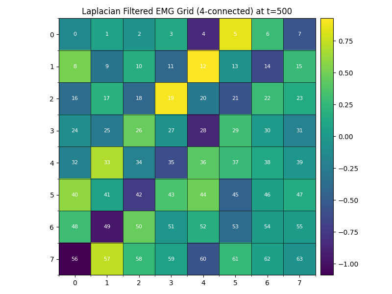
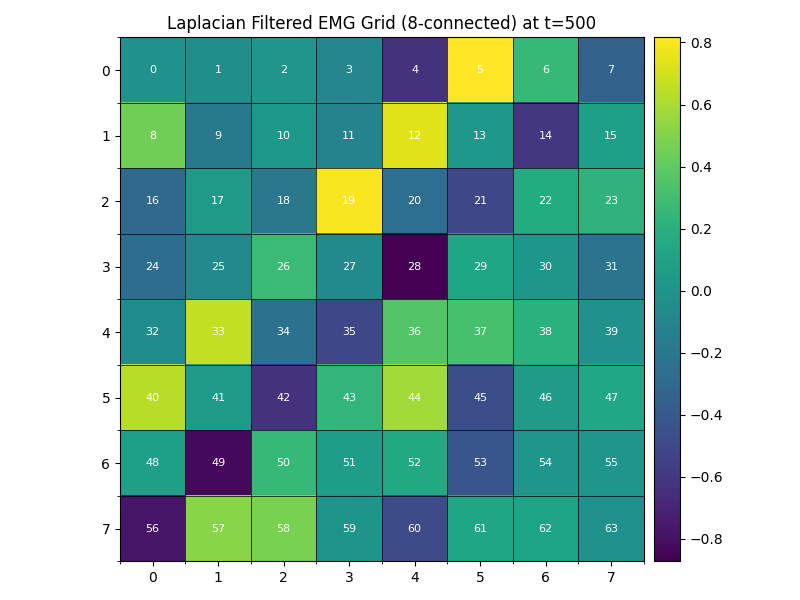

Note
Go to the end to download the full example code.
Spatial Filtering with AveragingSpatialFilter#
This example demonstrates how to use the AveragingSpatialFilter to perform spatial filtering on EMG grid data. Spatial filtering can help reduce spatial noise and extract directional information from multi-electrode recordings.
We’ll cover: 1. Creating synthetic EMG grid data 2. Applying longitudinal spatial filtering (along columns) 3. Applying transverse spatial filtering (along rows) 4. Sequential filtering for 2D spatial averaging 5. Using the shift parameter for directional sensitivity
First, let’s import the necessary libraries
import numpy as np
import matplotlib.pyplot as plt
from mpl_toolkits.axes_grid1 import make_axes_locatable
from matplotlib.colors import Normalize
from myoverse.datatypes import EMGData
from myoverse.datasets.filters.spatial import AveragingSpatialFilter
from myoverse.datasets.filters._template import FilterBaseClass
def get_neighbors_from_grid(
grid_layout: np.ndarray, row: int, col: int, connectivity: str = "4-connected"
) -> list:
"""Get the indices of neighboring electrodes in a grid layout.
Parameters
----------
grid_layout : numpy.ndarray
2D array containing electrode indices
row : int
Row index of the target electrode
col : int
Column index of the target electrode
connectivity : str
Type of connectivity to use. Either "4-connected" (cardinal directions)
or "8-connected" (including diagonals).
Returns
-------
list
List of electrode indices for valid neighbors
"""
neighbors = []
max_rows, max_cols = grid_layout.shape
# Define neighbor offsets based on connectivity
if connectivity == "4-connected":
# Cardinal directions: up, right, down, left
offsets = [(-1, 0), (0, 1), (1, 0), (0, -1)]
else: # 8-connected
# Cardinal + diagonal directions
offsets = [(-1, 0), (-1, 1), (0, 1), (1, 1), (1, 0), (1, -1), (0, -1), (-1, -1)]
# Check each potential neighbor
for row_offset, col_offset in offsets:
neighbor_row = row + row_offset
neighbor_col = col + col_offset
# Check if neighbor position is valid
if 0 <= neighbor_row < max_rows and 0 <= neighbor_col < max_cols:
# Get the electrode index at this position
neighbor_idx = grid_layout[neighbor_row, neighbor_col]
# Only add valid electrodes (index >= 0)
if neighbor_idx >= 0:
neighbors.append(neighbor_idx)
return neighbors
Set random seed for reproducibility
np.random.seed(42)
Creating Synthetic EMG Grid Data#
We’ll create a synthetic 8x8 EMG grid (64 electrodes) with a propagating spatial pattern to demonstrate the filtering effects.
# Generate a base pattern (8x8 grid = 64 electrodes)
# We'll create a pattern that simulates a motor unit action potential (MUAP)
# propagating diagonally across the grid
n_rows, n_cols = 8, 8
n_samples = 1000
sampling_frequency = 2000 # Hz
# Create a clean time base
t = np.linspace(0, 1, n_samples)
# Create grid data with a space-varying pattern
grid_data = np.zeros((n_rows * n_cols, n_samples))
# Create a propagating wave pattern
for row in range(n_rows):
for col in range(n_cols):
# Calculate delay based on position (diagonal propagation)
delay = (row + col) * 0.05
# Create a clean signal with delay
clean_signal = np.sin(2 * np.pi * 5 * (t - delay)) * np.exp(
-((t - delay - 0.2) ** 2) / 0.01
)
# Make the signal zero before the delay
clean_signal[t < delay] = 0
# Add noise
noise = np.random.randn(n_samples) * 0.2
# Combine signal and noise
electrode_idx = row * n_cols + col
grid_data[electrode_idx] = clean_signal + noise
Creating EMGData object with Grid Layout#
Now we’ll create an EMGData object and define its grid layout
# Create EMGData object
emg = EMGData(grid_data, sampling_frequency)
# Define grid layout (8x8 grid with electrodes numbered from 0 to 63)
grid_layout = np.arange(n_rows * n_cols).reshape(n_rows, n_cols)
emg.grid_layouts = [grid_layout]
Visualize the original EMG data#
Let’s visualize the original data at a specific time point
# Function to visualize EMG grid data
def visualize_grid_data(data, grid_layout, title, sample_idx=500):
"""
Visualize EMG data on a grid at a specific time point.
Parameters
----------
data : np.ndarray
EMG data with shape (n_channels, n_samples)
grid_layout : np.ndarray
2D array with electrode indices
title : str
Plot title
sample_idx : int
Time sample index to visualize
"""
# Extract data at the specified time point
grid_values = np.zeros(grid_layout.shape)
# Fill the grid with values
for r in range(grid_layout.shape[0]):
for c in range(grid_layout.shape[1]):
electrode_idx = grid_layout[r, c]
if electrode_idx >= 0 and electrode_idx < data.shape[0]:
grid_values[r, c] = data[electrode_idx, sample_idx]
# Create figure and axis
fig, ax = plt.subplots(figsize=(8, 6))
# Plot as a heatmap
im = ax.imshow(grid_values, cmap="viridis")
# Add a colorbar
divider = make_axes_locatable(ax)
cax = divider.append_axes("right", size="5%", pad=0.1)
plt.colorbar(im, cax=cax)
# Add grid lines
ax.set_xticks(np.arange(-0.5, grid_layout.shape[1], 1), minor=True)
ax.set_yticks(np.arange(-0.5, grid_layout.shape[0], 1), minor=True)
ax.grid(which="minor", color="k", linestyle="-", linewidth=0.5)
# Add electrode numbers
for r in range(grid_layout.shape[0]):
for c in range(grid_layout.shape[1]):
electrode_idx = grid_layout[r, c]
if electrode_idx >= 0: # Only show valid electrodes
ax.text(
c,
r,
str(electrode_idx),
ha="center",
va="center",
color="w",
fontsize=8,
)
ax.set_title(title)
plt.tight_layout()
plt.show()
# Visualize the original grid data
visualize_grid_data(
emg["Input"], emg.grid_layouts[0], "Original EMG Grid (8x8) at t=500"
)

Longitudinal Spatial Filtering#
Now let’s apply a longitudinal averaging spatial filter (filtering along columns)
# Create a longitudinal filter with order 3
longitudinal_filter = AveragingSpatialFilter(
order=3, # Average 3 electrodes together
filter_direction="longitudinal", # Filter along columns
input_is_chunked=False,
)
# Apply the filter
longitudinal_rep = emg.apply_filter(
longitudinal_filter, representations_to_filter=["Input"]
)
# Visualize the longitudinal filtered data
visualize_grid_data(
emg[longitudinal_rep],
emg.grid_layouts[0],
f"Longitudinal Filtered EMG Grid (Order 3) at t=500",
)
Transverse Spatial Filtering#
Now let’s apply a transverse averaging spatial filter (filtering along rows)
# Reset the grid layout
emg.grid_layouts = [grid_layout]
# Create a transverse filter with order 3
transverse_filter = AveragingSpatialFilter(
order=3, # Average 3 electrodes together
filter_direction="transverse", # Filter along rows
input_is_chunked=False,
)
# Apply the filter
transverse_rep = emg.apply_filter(
transverse_filter, representations_to_filter=["Input"]
)
# Visualize the transverse filtered data
visualize_grid_data(
emg[transverse_rep],
emg.grid_layouts[0],
f"Transverse Filtered EMG Grid (Order 3) at t=500",
)
Sequential Filtering for 2D Spatial Averaging#
We can apply both longitudinal and transverse filters sequentially to create a 2D averaging window.
# Reset the grid layout
emg.grid_layouts = [grid_layout]
# Create filter with lower orders to better visualize the result
long_filter_2d = AveragingSpatialFilter(
order=2,
filter_direction="longitudinal",
input_is_chunked=False,
)
# Apply the longitudinal filter
long_rep = emg.apply_filter(long_filter_2d, representations_to_filter=["Input"])
# Now apply a transverse filter to the longitudinal filtered data
trans_filter_2d = AveragingSpatialFilter(
order=2,
filter_direction="transverse",
input_is_chunked=False,
)
# Apply the transverse filter on top of the longitudinal filter
seq_rep = emg.apply_filter(trans_filter_2d, representations_to_filter=[long_rep])
# Visualize the sequentially filtered data
visualize_grid_data(
emg[seq_rep], emg.grid_layouts[0], f"2D Filtered EMG Grid (2x2 window) at t=500"
)
Using the Shift Parameter for Directional Sensitivity#
The shift parameter allows creating asymmetric filters that are sensitive to signal propagation direction. Let’s compare filters with different shifts.
# Let's look at a different time point where signal is still propagating
time_point = 300
# Reset the grid layout
emg.grid_layouts = [grid_layout]
# Create three filters with different shifts
no_shift_filter = AveragingSpatialFilter(
order=3,
filter_direction="longitudinal",
shift=0, # No shift (symmetric)
input_is_chunked=False,
)
pos_shift_filter = AveragingSpatialFilter(
order=3,
filter_direction="longitudinal",
shift=1, # Positive shift (looks ahead)
input_is_chunked=False,
)
neg_shift_filter = AveragingSpatialFilter(
order=3,
filter_direction="longitudinal",
shift=-1, # Negative shift (looks behind)
input_is_chunked=False,
)
# Create a figure with subplots for comparison
fig, axes = plt.subplots(2, 2, figsize=(14, 10))
axes = axes.flatten()
# Plot original data
grid_values_orig = np.zeros(grid_layout.shape)
for r in range(grid_layout.shape[0]):
for c in range(grid_layout.shape[1]):
electrode_idx = grid_layout[r, c]
if electrode_idx >= 0 and electrode_idx < emg["Input"].shape[0]:
grid_values_orig[r, c] = emg["Input"][electrode_idx, time_point]
im0 = axes[0].imshow(grid_values_orig, cmap="viridis")
axes[0].set_title("Original Grid at t=300")
# Apply and plot the three different filters
filter_names = [
"No Shift (Symmetric)",
"Positive Shift (Forward)",
"Negative Shift (Backward)",
]
filters = [no_shift_filter, pos_shift_filter, neg_shift_filter]
# Create a common color scale for better comparison
all_filtered_values = []
# First pass to collect all values for normalization
for i, filt in enumerate(filters):
# Reset grid layout
emg.grid_layouts = [grid_layout.copy()]
# Apply filter
rep_name = emg.apply_filter(filt, representations_to_filter=["Input"])
# Get filtered data at time point
grid_values = np.zeros(emg.grid_layouts[0].shape)
for r in range(emg.grid_layouts[0].shape[0]):
for c in range(emg.grid_layouts[0].shape[1]):
electrode_idx = emg.grid_layouts[0][r, c]
if electrode_idx >= 0 and electrode_idx < emg[rep_name].shape[0]:
grid_values[r, c] = emg[rep_name][electrode_idx, time_point]
all_filtered_values.append(grid_values)
# Find global min and max for normalization
all_values = np.concatenate([values.flatten() for values in all_filtered_values])
vmin, vmax = np.min(all_values), np.max(all_values)
norm = Normalize(vmin=vmin, vmax=vmax)
# Second pass to plot with normalized colors
for i, filt in enumerate(filters):
# Reset grid layout
emg.grid_layouts = [grid_layout.copy()]
# Apply filter
rep_name = emg.apply_filter(filt, representations_to_filter=["Input"])
# Get filtered data
grid_values = all_filtered_values[i]
# Plot with common normalization
im = axes[i + 1].imshow(grid_values, cmap="viridis", norm=norm)
axes[i + 1].set_title(f"Filter with {filter_names[i]}")
# Add electrode numbers
for r in range(emg.grid_layouts[0].shape[0]):
for c in range(emg.grid_layouts[0].shape[1]):
electrode_idx = emg.grid_layouts[0][r, c]
if electrode_idx >= 0: # Only show valid electrodes
axes[i + 1].text(
c,
r,
str(electrode_idx),
ha="center",
va="center",
color="w",
fontsize=8,
)
# Add grid lines
axes[i + 1].set_xticks(np.arange(-0.5, emg.grid_layouts[0].shape[1], 1), minor=True)
axes[i + 1].set_yticks(np.arange(-0.5, emg.grid_layouts[0].shape[0], 1), minor=True)
axes[i + 1].grid(which="minor", color="k", linestyle="-", linewidth=0.5)
# Add colorbar
fig.subplots_adjust(right=0.85)
cbar_ax = fig.add_axes([0.87, 0.15, 0.02, 0.7])
fig.colorbar(im, cax=cbar_ax)
plt.suptitle("Effect of Shift Parameter on Spatial Filtering", fontsize=16)
plt.tight_layout(rect=[0, 0, 0.85, 0.95])
plt.show()
/home/runner/work/MyoVerse/MyoVerse/examples/02_filters/2_spatial_filtering.py:416: UserWarning: This figure includes Axes that are not compatible with tight_layout, so results might be incorrect.
plt.tight_layout(rect=[0, 0, 0.85, 0.95])
Compare Time Series Before and After Filtering#
Let’s examine how the filtering affects the time series data for a few electrodes
# Select a few electrodes to visualize
electrode_indices = [27, 28, 35, 36] # A 2x2 block in the middle of the grid
# Create a figure with subplots
fig, axes = plt.subplots(4, 1, figsize=(10, 12), sharex=True)
# Plot time series for original data
for i, electrode_idx in enumerate(electrode_indices):
axes[0].plot(t, emg["Input"][electrode_idx], label=f"Electrode {electrode_idx}")
axes[0].set_title("Original EMG Signals")
axes[0].set_ylabel("Amplitude")
axes[0].legend()
axes[0].grid(True)
# Plot time series after longitudinal filtering
# Reset grid layout
emg.grid_layouts = [grid_layout.copy()]
long_rep = emg.apply_filter(longitudinal_filter, representations_to_filter=["Input"])
# Find corresponding electrodes in the filtered data
filtered_electrode_indices = []
for orig_idx in electrode_indices:
# Find the position of this electrode in the original grid
pos = np.where(grid_layout == orig_idx)
row, col = pos[0][0], pos[1][0]
# Find the electrode at the same position in the filtered grid (if it exists)
if row < emg.grid_layouts[0].shape[0] and col < emg.grid_layouts[0].shape[1]:
filtered_idx = emg.grid_layouts[0][row, col]
if filtered_idx >= 0:
filtered_electrode_indices.append((orig_idx, filtered_idx))
# Plot the filtered signals
for orig_idx, filtered_idx in filtered_electrode_indices:
axes[1].plot(t, emg[long_rep][filtered_idx], label=f"Filtered from {orig_idx}")
axes[1].set_title("Longitudinal Filtered Signals (Order 3)")
axes[1].set_ylabel("Amplitude")
axes[1].legend()
axes[1].grid(True)
# Plot time series after transverse filtering
# Reset grid layout
emg.grid_layouts = [grid_layout.copy()]
trans_rep = emg.apply_filter(transverse_filter, representations_to_filter=["Input"])
# Find corresponding electrodes for transverse filtering
trans_electrode_indices = []
for orig_idx in electrode_indices:
# Find the position of this electrode in the original grid
pos = np.where(grid_layout == orig_idx)
row, col = pos[0][0], pos[1][0]
# Find the electrode at the same position in the filtered grid (if it exists)
if row < emg.grid_layouts[0].shape[0] and col < emg.grid_layouts[0].shape[1]:
filtered_idx = emg.grid_layouts[0][row, col]
if filtered_idx >= 0:
trans_electrode_indices.append((orig_idx, filtered_idx))
# Plot the filtered signals
for orig_idx, filtered_idx in trans_electrode_indices:
axes[2].plot(t, emg[trans_rep][filtered_idx], label=f"Filtered from {orig_idx}")
axes[2].set_title("Transverse Filtered Signals (Order 3)")
axes[2].set_ylabel("Amplitude")
axes[2].legend()
axes[2].grid(True)
# Plot time series with different shifts
# Reset grid layout
emg.grid_layouts = [grid_layout.copy()]
# Apply a filter with positive shift
pos_shift_rep = emg.apply_filter(pos_shift_filter, representations_to_filter=["Input"])
# Apply a filter with negative shift
emg.grid_layouts = [grid_layout.copy()]
neg_shift_rep = emg.apply_filter(neg_shift_filter, representations_to_filter=["Input"])
# Get one electrode to show the difference clearly
if len(filtered_electrode_indices) > 0:
orig_idx, filt_idx = filtered_electrode_indices[0]
# Find corresponding electrodes in shifted filter outputs
pos_row, pos_col = np.where(emg.grid_layouts[0] == filt_idx)
if len(pos_row) > 0 and len(pos_col) > 0:
pos_filtered_idx = emg.grid_layouts[0][pos_row[0], pos_col[0]]
axes[3].plot(
t,
emg[pos_shift_rep][pos_filtered_idx],
label=f"Positive Shift ({orig_idx})",
color="green",
)
# Reset and find for negative shift
emg.grid_layouts = [grid_layout.copy()]
neg_rep = emg.apply_filter(neg_shift_filter, representations_to_filter=["Input"])
neg_row, neg_col = np.where(emg.grid_layouts[0] == filt_idx)
if len(neg_row) > 0 and len(neg_col) > 0:
neg_filtered_idx = emg.grid_layouts[0][neg_row[0], neg_col[0]]
axes[3].plot(
t,
emg[neg_shift_rep][neg_filtered_idx],
label=f"Negative Shift ({orig_idx})",
color="red",
)
axes[3].set_title("Effect of Shift Parameter on Filtering")
axes[3].set_xlabel("Time (s)")
axes[3].set_ylabel("Amplitude")
axes[3].legend()
axes[3].grid(True)
plt.tight_layout()
plt.show()
Conclusion#
In this example, we’ve seen how the AveragingSpatialFilter can be used for spatial filtering of EMG grid data. Key points:
Directional Filtering: The filter can be applied in longitudinal or transverse directions
Smoothing Effect: Spatial averaging reduces noise and enhances signal quality
Dimensional Reduction: The filter reduces the spatial dimensions based on the order
Shift Parameter: Allows creating asymmetric filters sensitive to signal propagation direction
Sequential Application: Can be applied sequentially for 2D spatial averaging
Spatial filtering is particularly useful when working with high-density EMG recordings, as it can help extract directional information about muscle activity propagation and reduce common noise across electrodes.
Creating Your Own Custom Spatial Filter#
You can also create custom spatial filters to implement specialized processing. Here, we’ll create a custom Laplacian spatial filter, which is useful for highlighting local muscle activity by enhancing signal differences between an electrode and its neighbors.
class LaplacianSpatialFilter(FilterBaseClass):
"""Custom Laplacian spatial filter for EMG grids.
This filter computes the difference between each electrode and the average
of its adjacent neighbors. It helps to highlight local activity and reduce
common-mode noise.
Parameters
----------
input_is_chunked : bool
Whether the input is chunked or not.
is_output : bool
Whether the filter is an output filter.
name : str | None
Name of the filter, by default None.
run_checks : bool
Whether to run the checks when filtering.
connectivity : str
The type of connectivity to use. Either "4-connected" (cardinal directions)
or "8-connected" (including diagonals).
"""
def __init__(
self,
input_is_chunked: bool,
is_output: bool = False,
name: str | None = None,
run_checks: bool = True,
*,
connectivity: str = "4-connected",
):
super().__init__(
input_is_chunked=input_is_chunked,
allowed_input_type="both", # Works with both chunked and non-chunked data
is_output=is_output,
name=name,
run_checks=run_checks,
)
if connectivity not in ["4-connected", "8-connected"]:
raise ValueError(
"Connectivity must be either '4-connected' or '8-connected'"
)
self.connectivity = connectivity
def _filter(self, input_array: np.ndarray, **kwargs) -> np.ndarray:
"""Apply Laplacian spatial filtering to the input array.
Parameters
----------
input_array : numpy.ndarray
Input array to filter
**kwargs
Additional keyword arguments from the Data object.
Must include 'grid_layouts' for spatial filtering.
Returns
-------
numpy.ndarray
Filtered array
"""
# Check if grid_layouts is provided
grid_layouts = kwargs.get("grid_layouts")
if grid_layouts is None or len(grid_layouts) == 0:
raise ValueError("grid_layouts is required for spatial filtering")
grid_layout = grid_layouts[0] # Use the first grid layout
# Get the shape of the input array
original_shape = input_array.shape
# Initialize output array with zeros (same shape as input)
if not self.input_is_chunked:
output_array = np.zeros_like(input_array)
# For each electrode in the grid
for row_idx in range(grid_layout.shape[0]):
for col_idx in range(grid_layout.shape[1]):
electrode_idx = grid_layout[row_idx, col_idx]
# Skip invalid electrodes (marked with -1)
if electrode_idx < 0:
continue
# Get neighbor indices
neighbors = get_neighbors_from_grid(
grid_layout, row_idx, col_idx, connectivity=self.connectivity
)
# Skip electrodes with no neighbors
if len(neighbors) == 0:
output_array[electrode_idx] = input_array[electrode_idx]
continue
# Calculate the average of neighboring electrodes
neighbor_avg = np.zeros_like(input_array[electrode_idx])
for neighbor_idx in neighbors:
neighbor_avg += input_array[neighbor_idx]
neighbor_avg /= len(neighbors)
# Apply Laplacian operation: center - average of neighbors
output_array[electrode_idx] = (
input_array[electrode_idx] - neighbor_avg
)
return output_array
else:
# Handle chunked data
output_array = np.zeros_like(input_array)
# For each chunk
for chunk in range(original_shape[0]):
# For each electrode in the grid
for row_idx in range(grid_layout.shape[0]):
for col_idx in range(grid_layout.shape[1]):
electrode_idx = grid_layout[row_idx, col_idx]
# Skip invalid electrodes
if electrode_idx < 0:
continue
# Get neighbor indices
neighbors = get_neighbors_from_grid(
grid_layout,
row_idx,
col_idx,
connectivity=self.connectivity,
)
# Skip electrodes with no neighbors
if len(neighbors) == 0:
output_array[chunk, electrode_idx] = input_array[
chunk, electrode_idx
]
continue
# Calculate the average of neighboring electrodes
neighbor_avg = np.zeros_like(input_array[chunk, electrode_idx])
for neighbor_idx in neighbors:
neighbor_avg += input_array[chunk, neighbor_idx]
neighbor_avg /= len(neighbors)
# Apply Laplacian operation: center - average of neighbors
output_array[chunk, electrode_idx] = (
input_array[chunk, electrode_idx] - neighbor_avg
)
return output_array
# Reset the grid layout
emg.grid_layouts = [grid_layout]
# Create our custom Laplacian filter (4-connected)
laplacian_filter = LaplacianSpatialFilter(
input_is_chunked=False, is_output=True, name="Laplacian", connectivity="4-connected"
)
# Apply the custom filter
laplacian_rep = emg.apply_filter(laplacian_filter, representations_to_filter=["Input"])
# Create the 8-connected version for comparison
laplacian_filter_8 = LaplacianSpatialFilter(
input_is_chunked=False,
is_output=True,
name="Laplacian8",
connectivity="8-connected",
)
# Apply the 8-connected filter
laplacian_8_rep = emg.apply_filter(
laplacian_filter_8, representations_to_filter=["Input"]
)
# Visualize the custom filtered data
visualize_grid_data(
emg[laplacian_rep],
emg.grid_layouts[0],
f"Laplacian Filtered EMG Grid (4-connected) at t=500",
)
# Visualize the 8-connected version
visualize_grid_data(
emg[laplacian_8_rep],
emg.grid_layouts[0],
f"Laplacian Filtered EMG Grid (8-connected) at t=500",
)
- 
- 
Custom filters like the Laplacian spatial filter can help highlight specific EMG signal characteristics that may be useful for your particular application. By extending the FilterBaseClass, you can implement any spatial filtering algorithm appropriate for your needs.
Total running time of the script: (0 minutes 6.019 seconds)
Estimated memory usage: 579 MB